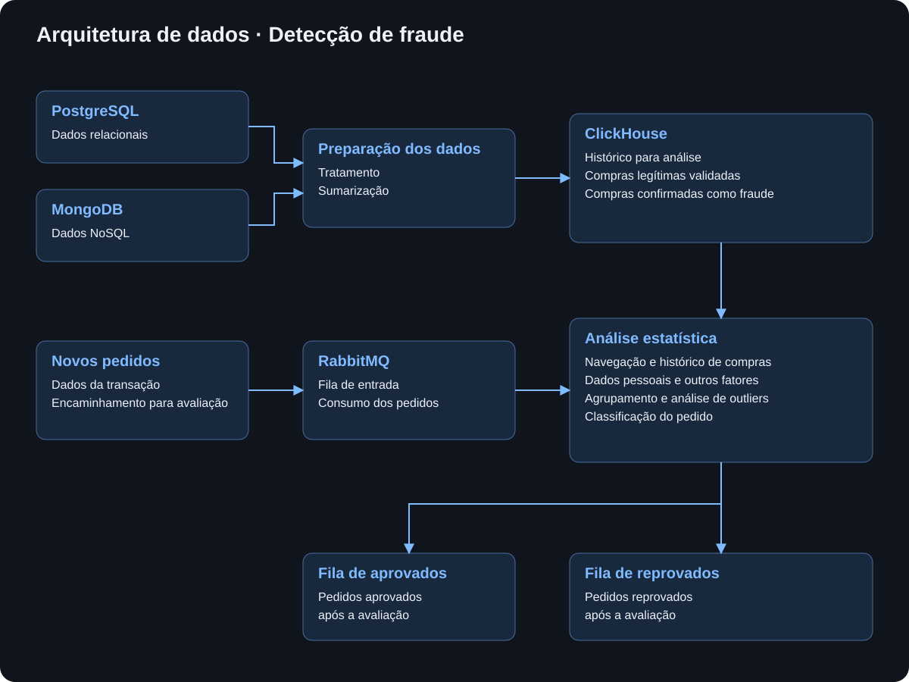

EXPERIÊNCIA PROFISSIONAL
Detecção de fraude com estatística
Problema e objetivo
O projeto foi desenvolvido para reduzir as perdas financeiras causadas por fraudes em transações. A solução utilizava técnicas estatísticas para identificar padrões anômalos nos pedidos e apoiar sua classificação, buscando distinguir compras legítimas de operações fraudulentas sem reprovar indevidamente os clientes.
Arquitetura planejada
Os dados eram coletados de duas fontes: o banco relacional PostgreSQL e o banco NoSQL MongoDB. Após o tratamento e a sumarização, as informações eram armazenadas no ClickHouse e utilizadas como referência nas análises. O histórico reunia dois grupos: compras legítimas, aprovadas e validadas por terceiros, e compras confirmadas como fraudulentas. Essa separação permitia comparar as características dos novos pedidos com os padrões observados em cada grupo.
O fluxo de avaliação começava com o envio dos dados de um novo pedido ao RabbitMQ. O sistema de detecção consumia essas mensagens, analisava as informações do pedido em conjunto com os dados históricos e publicava o resultado na fila correspondente à classificação: pedidos aprovados ou reprovados.

Funcionamento
A análise cruzava informações de navegação, histórico de compras, dados pessoais e outros fatores para avaliar a probabilidade de fraude. Técnicas de agrupamento e análise de valores atípicos (outliers) ajudavam a identificar transações que se afastavam do comportamento habitual dos clientes. O resultado dessa avaliação orientava o encaminhamento de cada pedido para a fila de aprovados ou de reprovados.
Resultados
Com essa abordagem, foi possível reduzir em 97% os falsos positivos, ou seja, os casos em que compras legítimas eram classificadas como suspeitas de fraude. Esse resultado atendia ao objetivo de tornar a identificação de fraudes mais precisa e reduzir as reprovações indevidas.